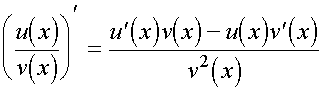

Основные свойства
Производная сложной функции:
Если у функции y = f(x) есть производная в точке x
0
, а у функции y = g(x) есть производная в точке y
0
= f(x
0
), тогда у сложной функции h(x) = g(f(x)) тоже есть производная в точке x
0
, при этом:
h'(x
0
) = g'(y
0
) ∗ f '(x
0
).
Если в точке x есть конечные производные функций v = v(x) и u = u(x), тогда в этой точке есть и производные суммы, разности, произведения и частного таких функций, при этом:
1. (u(x)+v(x))' = u'(x)+v'(x);
2. (u(x)-v(x))' = u'(x)-v'(x);
3. (u(x)∗v(x))' = u'(x)∗v(x)-u(x)∗v'(x);
4. , где v(x) ≠ 0;
5. (C∗u(x))' = C∗u'(x), C = const;